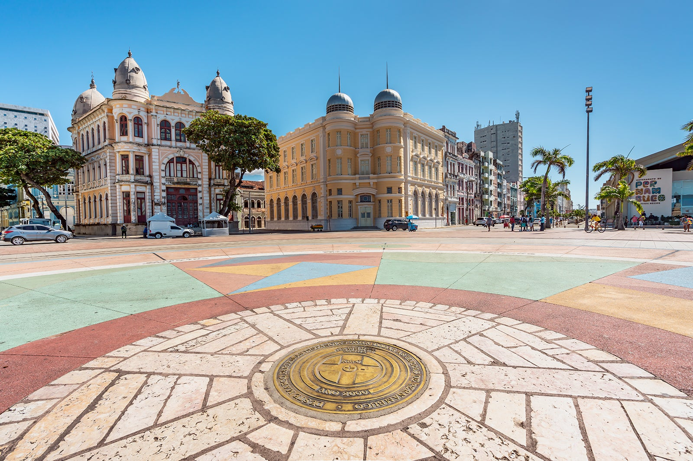
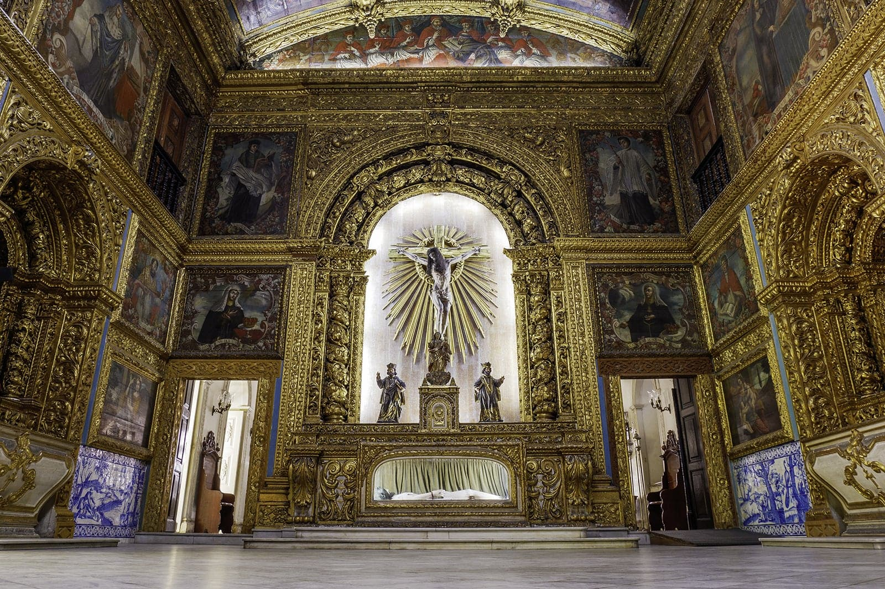
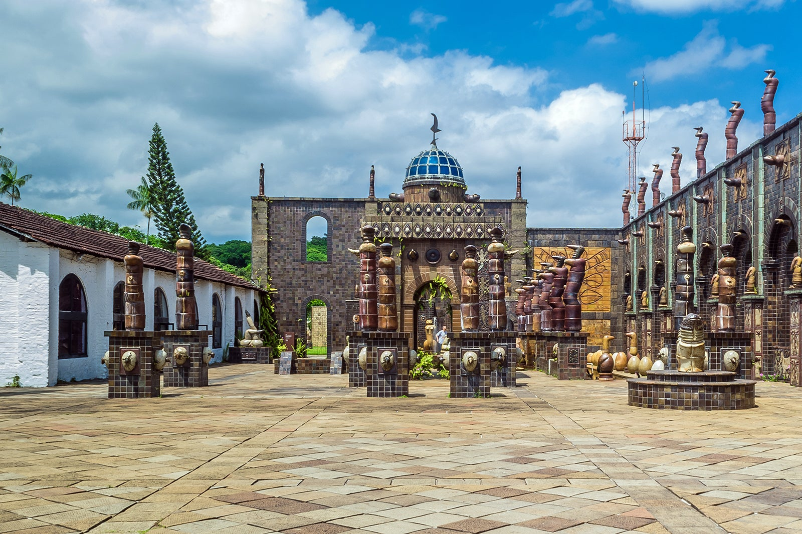
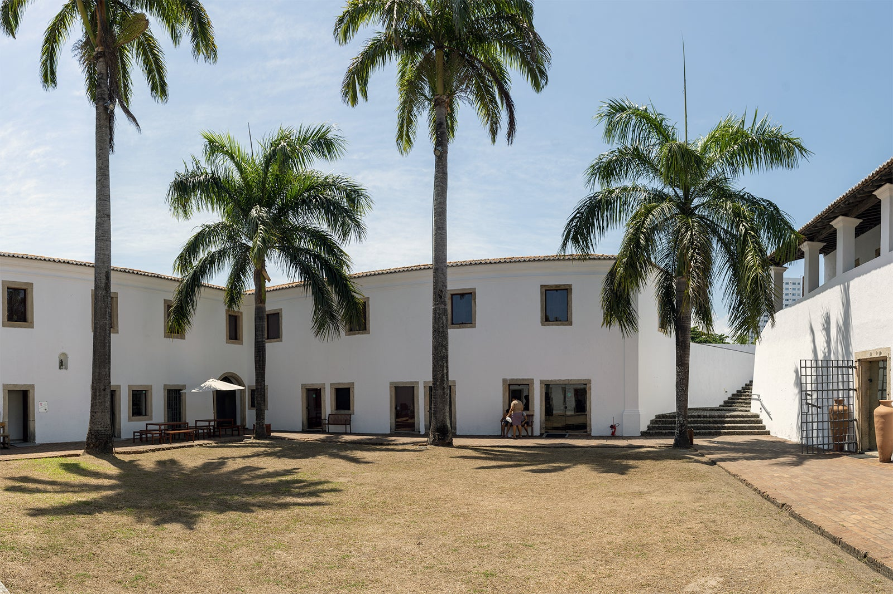
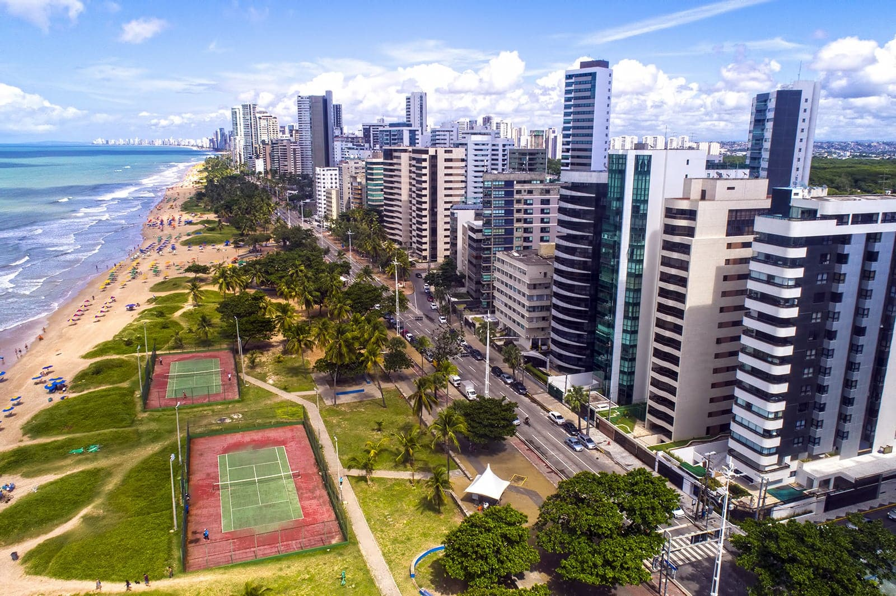

1. Marco Zero

O Marco Zero foi onde a cidade literalmente começou. Localizado
na Praça Rio Branco, é lá que se encontra o ponto inicial para a
contagem das distâncias da cidade.
Dali, além de prédios históricos e da movimentação cotidiana da
capital, turistas e moradores podem aproveitar toda a infraestrutura
da região, com bares, restaurantes, museus e centro culturais.
De segunda a segunda, há sempre gente movimentando o local em qualquer
hora do dia e da noite. Um passeio completo e muito diversificado.
Localização: Av. Alfredo Lisboa - Recife, PE, 50030-150
2. Capela Dourada

Uma das igrejas mais bonitas da capital, a Capela Dourada guarda muito da ostentação
e da riqueza do Brasil colonial, com muitos detalhes em ouro, madeiras trabalhadas e
pinturas sacras. Na verdade, a capela fica dentro do Convento e da Igreja de Santo Antônio,
onde também está o Museu de Arte Sacra.
Perto dali, não deixe de conhecer o Convento de São Francisco,
que compõe um belo conjunto arquitetônico com a Igreja de Nossa
Senhora das Neves, a Capela de Santana e a Capela de São Roque.
Localização: Altura da rua Siqueira Campos, R. do Imperador Pedro II, S/N - Santo Antônio, Recife - PE, 50010-240
Telefone: 55 (81) 3224-0530
3. Oficina de Cerâmica Francisco Brennand

Um passeio altamente recomendado é uma visita até a Oficina de
Cerâmica Francisco Brennand, que pertence ao próprio artista.
O local foi transformado por ele em um museu a céu aberto, tem
espaços para a exposição de suas obras e é a oficina de produção
de uma das melhores cerâmicas do país.
Ainda com a chancela da família Brennand,
o Instituto Ricardo Brennand é outra excelente alternativa para visitantes
de todas as idades que apreciam arte, arquitetura e história. O acervo
inclui exposições permanentes e temporárias de artistas nacionais e internacionais
e um arsenal de armas, armaduras, tapetes e quadros da era medieval.
Localização: Propriedade Santos Cosme e Damião Rua Diogo de Vasconcelos, S/N - Várzea, Recife - PE, 50740-970
Telefone: +55 (81) 3271-2623; +55 (81) 3453-1326; +55 (81) 3272-5196
4. Forte das Cinco Pontas

O Forte das Cinco Pontas representa a última construção dos holandeses
na cidade, com o objetivo de protegê-la de possíveis ataques e também
para auxiliar na rede de distribuição de água. É um misto de cultura e
história em um único roteiro.
No lugar, ainda funciona o Museu da Cidade,
com exposições temporárias que abordam a história da capital pernambucana.
Além disso, é muito comum anunciarem programações temporárias com eventos
e exposições aleatórias. Logo, uma dica antes de visitar: busque informações
atualizadas no site oficial do museu.
Localização: Praça das Cinco Pontas, s/n - São José, Recife - PE, 50020-500
5. Praia de Boa Viagem

A Praia de Boa Viagem é a mais famosa da cidade, sempre muito movimentada
e frequentada por locais e turistas. O lugar oferece uma boa infraestrutura
e conta com uma extensa faixa de areia, bem convidativa para a prática de esportes.
Por ter arrecifes, o mar aqui costuma ser calmo e
com poucas ondas. Uma continuação da Praia de Boa Viagem, a Praia do Pina
também é bastante frequentada por locais. Com águas mornas, verdes e muitos
coqueiros ao redor, Pina é interessante para fugir do burburinho de Boa Viagem.
Localização: Av. Boa Viagem, Recife - PE, 51021-400